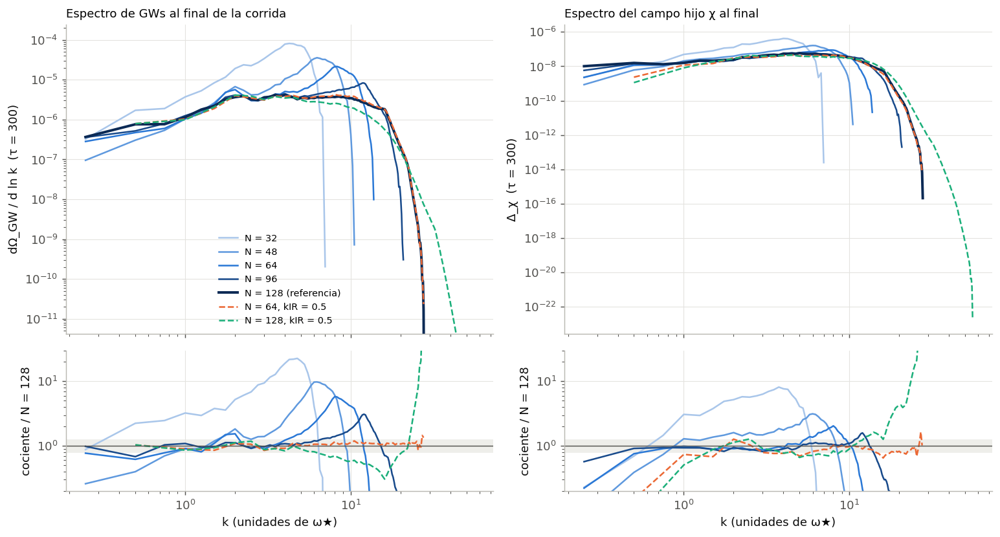
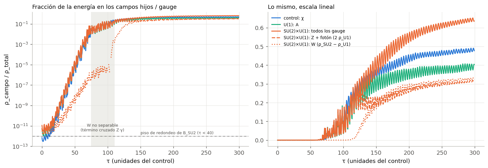
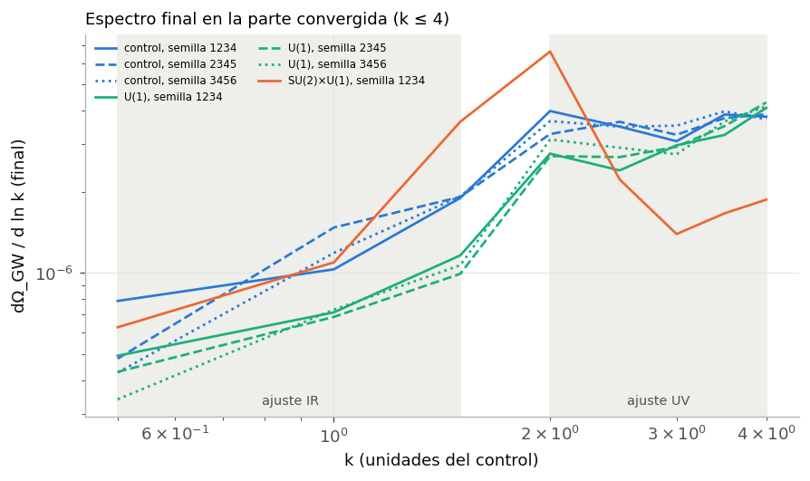

code/comparar_modelos.py.Proyecto final — Ondas gravitacionales e investigación asistida por IA, UBA 2026
Terminado el 28 de septiembre de 2026 — lo que quedó pendiente está en las conclusionesInformes en PDF: definitivo (5 páginas) y extendido (esta página completa).
¿No sos de física? Empezá por la bitácora, que cuenta el proyecto desde cero y en lenguaje llano, con un glosario. ¿Nunca usaste CosmoLattice? Qué es CosmoLattice explica cómo pone campos escalares y de gauge U(1)/SU(2) en una red, y las ecuaciones detrás de los espectros de ondas de este proyecto.
Al terminar la inflación, el campo que la impulsó (el inflatón) oscila y le pasa su energía a otros campos de forma violenta: es el recalentamiento. Las configuraciones de campo inhomogéneas que resultan tienen estrés anisotrópico y producen un fondo estocástico de ondas gravitacionales. Casi todo lo publicado supone que la energía va a campos escalares. Cuando va a un campo de gauge, su propia energía-momento contribuye a ese estrés, y su dinámica puede ser muy distinta de la resonancia escalar. El proyecto pregunta cuánto de la forma del espectro de ondas (frecuencia y altura del pico, pendientes a cada lado) se debe al campo de gauge, manteniendo fijo el resto del modelo.
Tres modelos que ya trae CosmoLattice, todos con
potencial λφ4: lphi4 (solo escalares, el control),
lphi4U1 (inflatón con carga U(1), o sea electrodinámica escalar) y
lphi4SU2U1 (SU(2)×U(1), parecido al sector electrodébil). Los valores por
defecto de los tres no son comparables, así que se fijaron parámetros emparejados
(Parámetros comparables, decididos el 22 de septiembre):
λ = 9×10−14, el inflatón arrancando en el mismo estado de fin de la
inflación, y un único canal resonante con q = 120 en cada modelo. Las cuentas de unidades y de la
ley de Gauss están verificadas en Bases teóricas.
| etapa | estado | dónde |
|---|---|---|
| Pregunta, enfoque, bibliografía | hecho | README.md, bibliografía/ |
Compilar CosmoLattice (lphi4, lphi4U1, lphi4SU2U1) | hecho | README.md |
| Parámetros comparables entre los tres modelos | hecho | Parámetros comparables |
Control lphi4, validado contra Dufaux et al. (2007) | hecho | El piloto del control, bitácora §3.1–3.2 |
| Elegir la resolución de la red | hecho | bitácora §3.3 |
lphi4U1 (con la condición inicial de CosmoLattice y con vacío transversal) | hecho, una semilla | bitácora §3.4 |
Más semillas del control y de lphi4U1 | hecho, tres semillas | bitácora §3.6 |
lphi4SU2U1: condición inicial con vacío transversal (mezcla tipo fotón/Z) | hecho | bitácora §3.5 |
lphi4SU2U1: corrida larga (9 h 22 min) | hecho, una semilla | bitácora §3.7 |
| Cómo y cuándo se producen las ondas; espectro de hoy | hecho | bitácora §3.8 |
| Forma del espectro: pendientes y pico | hecho | bitácora §3.9 |
Más semillas de lphi4SU2U1 | no llegó (~9 h cada una) | conclusiones |
El control lphi4 (N = 128) reproduce a Dufaux et al. (2007): el pico del espectro
hoy da h²ΩGW ≈ 3,8×10−11 a 9,7×107 Hz
(con la convención de Dufaux), contra ~3×10−11 a 1,2×108 Hz del
paper llevado al mismo λ. La resonancia crece al ritmo que predice la teoría de Floquet
(μ = 0,2002 medido contra 0,199) (detalle).
Con la misma caja, bajar el número de puntos por lado N amontona energía de ondas en el borde de la red y aparece un pico falso. Con la caja a la mitad, 64 puntos dan el mismo espectro que 128 (la energía total en ondas coincide a 0,3 %), 8 veces más rápido. Una corrida con el doble de alcance mostró que ninguna de las dos resuelve bien k > 4, así que la comparación entre modelos se apoya en el pico y en las longitudes de onda largas (k ≲ 4).

code/convergencia_N.py.CosmoLattice arranca el campo de gauge sin sus modos transversales, que son los que resuenan y
producen ondas. Solo pone la parte longitudinal que exige la ley de Gauss (paper del código,
arXiv:2102.01031, ecs. 97–102). El campo hijo del control, en cambio, arranca con fluctuaciones de
vacío. Con esa condición, la resonancia gauge llega ~40 unidades de tiempo tarde. Un parche a
CosmoLattice (code/parches/) les da fluctuaciones de vacío a los modos transversales,
sin tocar la ley de Gauss. Con él, la resonancia gauge va a la par de la del control. En las dos
versiones el campo magnético crece al ritmo de Floquet con q = 120: lo único que cambia es desde
qué tamaño arranca.
| misma red (N = 64, caja a la mitad), unidades del control | control | U(1), como arranca CosmoLattice | U(1), con vacío transversal |
|---|---|---|---|
| el campo hijo/gauge llega al 1 % de la energía (τ) | 68 | 105 | 68 |
| espectro de ondas en k = 0,5–2,5, respecto del control | 1 | 0,28–0,42 | 0,61–0,69 |
| energía total en ondas, respecto del control | 1 | 0,71 | 1,53 (dominada por k > 4, no convergido) |
code/comparar_modelos.py.Con tres semillas (bitácora §3.6) el resultado se sostiene: en la parte confiable del espectro U(1) produce 0,56–0,79 veces las ondas del control (medio 0,68). El momento de la resonancia no depende de la semilla; el espectro por punto varía hasta 34 % entre semillas.
Con el inflatón cargado bajo los dos campos, U(1) y un color de SU(2) se mezclan como en el Modelo Estándar: hay un "fotón" sin masa, una "Z" con la masa del campo hijo del control (q = 120) y dos "W" con q = 60 (bitácora §3.5). Con una semilla (bitácora §3.7):
| misma red, unidades del control | control (χ) | U(1) | SU(2)×U(1) |
|---|---|---|---|
| llega al 1 % de la energía (τ) | 68 | 68 | 68 (Z); 117 (W) |
| fracción de la energía al final | 48 % | 40 % | 64 % (31 % Z + fotón, 32 % W) |
| espectro de ondas en k = 0,5–2,5, respecto del control | 1 | 0,66 (misma semilla) | 0,64–1,92 (medio 1,11; 1,7–1,9 cerca del pico) |

code/analisis_SU2U1.py.Lectura provisoria: la Z resuena como el campo hijo del control. Las W, en cambio, casi no resuenan al principio y se disparan cuando todo ya es no lineal; mi hipótesis es que las empuja la interacción entre colores de SU(2), pero falta probarlo. Cerca del pico SU(2)×U(1) produce más ondas que el control. Es una sola semilla: falta repetirla.
Siguiendo el espectro de ondas en el tiempo (bitácora §3.8): en la fase lineal los tres modelos producen ondas al ritmo del cuadrado del campo. U(1) produce menos solo porque el campo gauge recibe menos energía (normalizando por eso, su eficiencia es 0,94 la del control). SU(2)×U(1) produce más (eficiencia 1,31) y antes: 80 % de sus ondas ya existe en τ = 120, cuando las W recién empiezan, contra 48 % del control. Hoy el máximo quedaría en h²ΩGW ~ 10−10 a ~108 Hz en los tres modelos: los campos gauge cambian la forma del espectro, no lo acercan a los detectores actuales.

code/produccion_gws.py.Ajustando dΩGW/d ln k ∝ kn a cada lado del máximo en la parte confiable (bitácora §3.9), con tres semillas para el control y U(1) y una para SU(2)×U(1):
| k ≤ 4 | control | U(1) | SU(2)×U(1) |
|---|---|---|---|
| forma | meseta de k = 2 a 4 | sube hasta el borde de lo confiable | pico en k = 2 |
| pendiente IR (k = 0,5–1,5) | 1,14 ± 0,34 | 0,85 ± 0,17 | 1,51 |
| pendiente UV cercana (k = 2–4) | 0,09 ± 0,12 | 0,55 ± 0,12 | −1,78 |
| altura máxima | 3,9–4,0×10−6 | 4,1–4,3×10−6 (k = 4) | 6,6×10−6 (k = 2) |

code/pendientes_espectro.py.La pregunta era cuánto de la forma del espectro de ondas gravitacionales del recalentamiento se debe al campo gauge, con el resto del modelo fijo. Con la red usada (N = 64; confiable para k ≤ 4):
code/parches/).Lo que no se puede afirmar con estos datos: nada sobre las ondas cortas (k > 4), que no están convergidas, ni sobre la energía total en ondas, que depende de esa zona. Tampoco la causa del exceso en SU(2)×U(1): el fotón o las interacciones propias de SU(2). Quedó pendiente: más semillas de SU(2)×U(1) (~9 h cada una); separar fotón, Z y W guardando los campos completos; y una red más grande para el UV.
| resultado | cómo se verificó | qué tan firme |
|---|---|---|
| Unidades, normalizaciones y ley de Gauss inicial de los tres modelos | Rehechas con álgebra simbólica (sympy) contra el código y contra el Art I (code/verificar_variables_de_programa.py). | Demostrado. |
| Parámetros comparables (q = 120 en un solo canal) | Floquet de la ecuación de Lamé; confirmado en las corridas: el canal que resuena llega al 1 % en τ = 68,1–68,4 en los tres modelos, con el mismo μ. | Firme (tres semillas). |
| El control es correcto | Comparado con Dufaux et al. (2007): altura, frecuencia, cola IR y fin de la resonancia; μ medido contra Floquet al 0,4 %. | Validación externa. |
| La red alcanza para k ≤ 4 | Seis corridas del control con distinta N y caja; una con el doble de alcance para ver la zona UV. | Firme; k > 4 marcado como no confiable. |
| Parches de vacío transversal | Pruebas cortas con la misma semilla: ruido del inflatón idéntico, Gauss en t = 0, energía agregada contra la cuenta analítica, vacío estacionario contra una referencia y prueba ×1000 contra el redondeo (code/validar_vacio_su2.py). | Firme; queda un 10 % sin explicar en la energía eléctrica, igual en U(1) y SU(2). |
| Mezcla fotón/Z/W | La matriz de masas se calcula con las mismas operaciones del código y el programa verifica que sea simétrica; las masas coinciden con la cuenta a mano. | Firme. |
| Calidad de cada simulación | Ley de Gauss (U(1) ≤ 10−9, SU(2) ≤ 10−6) y ecuación de Friedmann (≤ 4×10−4) monitoreadas en toda la corrida. | Firme. |
| U(1) da 0,56–0,79 del control | Tres semillas por modelo; la dispersión entre semillas es la barra de error. | Firme. |
| SU(2)×U(1): pico 1,7 veces el control; ondas antes | Comparado con la dispersión entre las seis corridas de control y U(1) (< 10 % en la altura máxima). | Probable: una sola semilla. |
| Mecanismo (pendientes y eficiencia) | Pendiente de las ondas contra la del campo (se espera 2, se mide 1,76–1,88); eficiencia como estimación de orden de magnitud. | Las pendientes, firmes; la eficiencia, como tendencia. |
| Espectro de hoy | Misma conversión que el piloto, validada contra Dufaux; una unidad de k da la misma frecuencia en los tres modelos. | Firme en el orden de magnitud. |
Cada afirmación de provenance/claims.yaml tiene además un campo
verificacion con este detalle. Los problemas que aparecieron en el camino (y cómo se
resolvieron) están en la bitácora, §3.10.
Todo está en el repositorio.
Un agente que lo clone empieza por AGENTS.md y README.md ("Cómo reproducirlo"):
CosmoLattice en el commit fijado, con los parches de code/parches/, y el entorno de Python de
requirements.txt. Todos los análisis y las verificaciones se rehacen desde los datos del repo,
sin simular, con python3 code/reproducir_analisis.py (unos 2,5 minutos). Termina con el
control de procedencia, y regenera exactamente las figuras y los números commiteados.
Cada figura y número de esta página tiene un registro en
provenance/claims.yaml y
provenance/numbers.json: qué lo produjo, qué se
escribió desde cero y qué vino de CosmoLattice o de una biblioteca, y cada elección que tenía una
alternativa razonable.